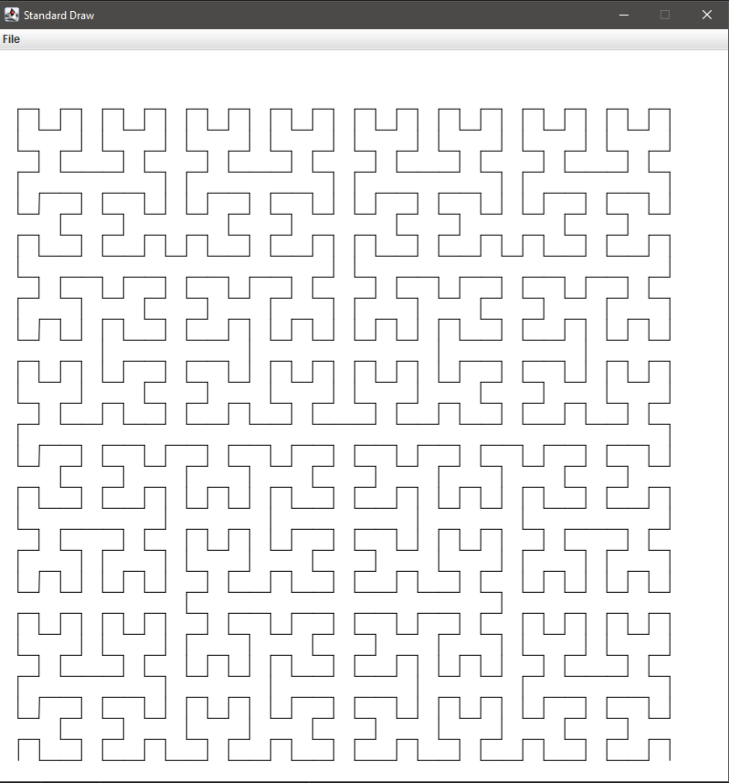

Using Jython for Quick Java Protyping
If you are tired of compiling Java classes when prototyping, or you are using poorly documented java libraries, this tutorial is for you.
Java runtime can be complimented with Python/Jython scripting.
Jython allows you to call java classes and run Java code inside a Python REPL, or from a regular .py file.
Python(the programming language) is written in C, not Java. There a multiple interpreters and implementations of Python, one of them is Jython. Jython is a complete Python implementation and written in Java.
Jython is a two-way street, meaning you can call Java classes inside Python, or call Python code inside Java. We will only focus call Java classes inside Jython, since doing it the other way around is much more involved, and not as useful for quick prototyping.
Running Jython for The First Time
prerequisites:
- JRE Installed
- Download
jython-101.zip; and extract it anywhere you like - Download
jython-standalone.2.7.2.jar, place it injython_101/libfolder
Terminal commands from this point are relative to the working directory: jython_101/
Begin by testing if Jython runs inside JRE:
java -jar ./lib/jython-standalone-2.7.2.jar --help
We called --help on our Jython CLI.
Call the hello_world.py script found in the stub:
java -classpath ./lib/* org.python.util.jython ./hello_world.py
Open the hello_world.py in your text editor and see that we can have mixed runtime inside a Jython script.
For something more practical, we can print the current time using java.util.Date.
Firstly start REPL:
java -jar ./lib/jython-standalone-2.7.2.jar
Then In the REPL shell enter this code (line by line):
>>> from java.util import Date >>> d = Date() >>> print(d.toString()) # Prints result in REPL Tue Jan 18 10:42:33 EET 2022
We called a Java stdlib class and printed its value using Jython print() method.
Exit the REPL shell by typing exit()
We can now compare similar identical functionality, from pure Java perspective
import java.util.Date; public class JavaDateDemo { public static void main(String args[]) { // init a Date object Date date = new Date(); // print time and date using toString() System.out.println(date.toString()); } }
As we compare Java vs Jython usage of the same java.util.Date class, it is evident, that Jython code is much more concise.
Let us generalize some key differences between Java and (P-)Jython
| Java | Jython |
|---|---|
| Code must be contained in a class | code can be called in any module |
required main() method definition |
not required |
| Functions and variables require type declarations | uses duck typing |
Object initialization requires a new keyword |
assignment using '=' is sufficient |
| Compilation required for execution | execution is done without compiling |
| verbose syntax | clean syntax |
| No REPL | has REPL |
Using Jython With Your Project
Up until this point I have only showed you some trivial code example for using Jython.
In this section we will use a 3-rd party Java library and do Turtle Graphics.
The code that generates the drawings was written in Jython and calls some Java drawing primitives, from StdDraw.java library (found at jython_101/lib/stdlib.jar).
In the extracted jython_101.zip stub, there is a Jython file called turtlej.py.
We will run it and see how the minimalist Jython program draws a space filling Hilbert curve, and a polygon.
Run turtlej.py:
java -classpath ./lib/* org.python.util.jython ./turtlej.py
Command explanation:
java: Java executable-classpath ./lib/*: parameter it simply tells your java runtime to scan all.jarfiles inside thelib/folder i.e. makes them available for import inside Jython.org.python.util.jython: is the reverse url notation to jython class containing amain()method(notice the class name is jython, not Jython)./turtlej.py: Name of the Jython script executed.
If everything went well, a new window should open, and you should see a result like shown below.

So as we see the turtlej.py drew 2 different images on screen.
The first one was the 5-th order Pseudo Hilbert Curve, and the second was a recursively generated polygon.
I suggest you to open turtlej.py in the text editor and try to understand what is being done for yourself.
Conclusion
Although we have not done much, apart to running some Jython scripts.
I propose you to read thoroughly through the turtlej.py program.
If you are feeling adventurous, use only Java and implement class Turtle and Hilbert curve drawing algorithm.
Then you will understand how slow Java development is as compared to Python.